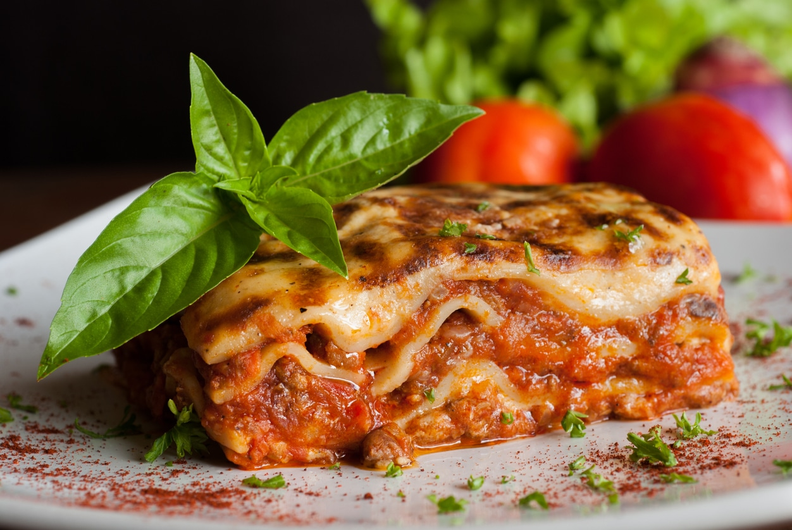

Lasagna

Description
Lasagna: A Classic of Italian Cuisine
Savor the unmistakable flavors of layered pasta sheets, rich Bolognese sauce,
creamy béchamel, and melted cheese. Perfect for a cozy dinner or a gathering
with friends and family. This recipe brings the full enjoyment of traditional
Italian cooking straight to your plate.
Ingredients
- 200g lasagna sheets
- 150g grated mozzarella cheese
- 50g grated Parmesan cheese
- 500g ground beef (or a mix of beef and pork)
- 1 large onion, finely chopped
- 2 cloves of garlic, minced
- 800g canned diced tomatoes
- 3 tablespoons tomato paste
- 2 teaspoons dried oregano
- 1 teaspoon dried basil
- 2 tablespoons olive oil
- Salt and pepper to taste
For the béchamel sauce:
- 50g butter
- 50g all-purpose flour
- 500ml milk
- A pinch of nutmeg
- Salt to taste
Steps
Step 1: Prepare the Meat Sauce
- Heat olive oil in a large pan over medium heat.
- Add the onion and sauté until translucent (about 3-4 minutes).
- Add the garlic and cook for 1 minute until fragrant.
- Add the ground beef and cook until browned, breaking it up with a spoon as it cooks.
- Stir in the tomato paste, cook for 1 minute.
- Add the diced tomatoes, oregano, basil, salt, and pepper. Stir well and let it simmer for 20-30 minutes, stirring occasionally, until the sauce thickens.
Step 2: Make the Béchamel Sauce
- Melt the butter in a saucepan over medium heat.
- Stir in the flour and cook for 1-2 minutes, stirring constantly, until it forms a paste (roux).
- Gradually whisk in the milk, making sure there are no lumps.
- Bring to a gentle boil, whisking constantly, until the sauce thickens.
- Season with a pinch of nutmeg and salt to taste. Remove from heat.
Step 3: Assemble the Lasagna
- Preheat your oven to 180°C (350°F).
- In a baking dish, spread a thin layer of the meat sauce at the bottom.
- Add a layer of lasagna sheets on top (trim if necessary to fit).
- Spread a layer of béchamel sauce over the lasagna sheets, followed by another layer of the meat sauce.Spread a layer of béchamel sauce over the lasagna sheets,
followed by another layer of the meat sauce.
- Repeat the layers (lasagna sheets, béchamel, meat sauce) until the dish is full, finishing with a layer of béchamel sauce on top.
- Sprinkle the mozzarella and Parmesan cheese evenly over the top.
Step 4: Bake the Lasagna
- Cover the baking dish with foil (to prevent the cheese from burning).
- Bake for 25 minutes.
- Remove the foil and bake for another 15-20 minutes, until the cheese is golden and bubbly.